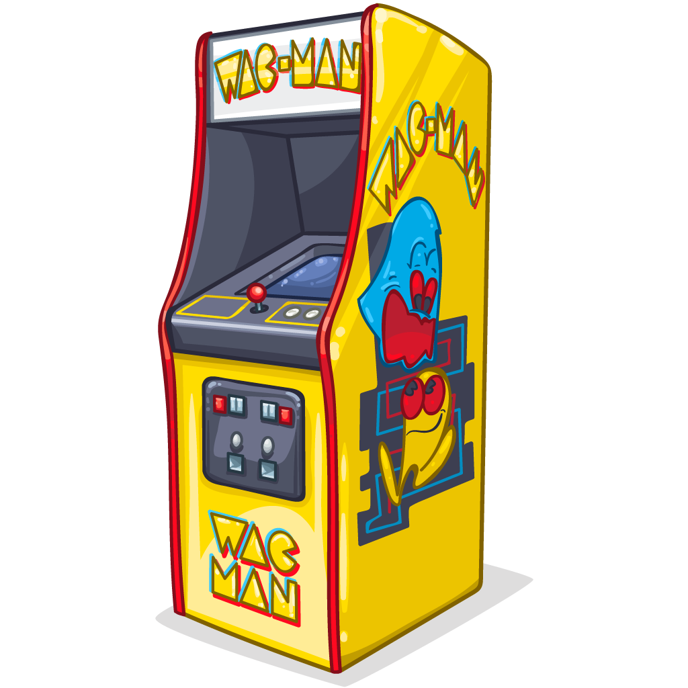
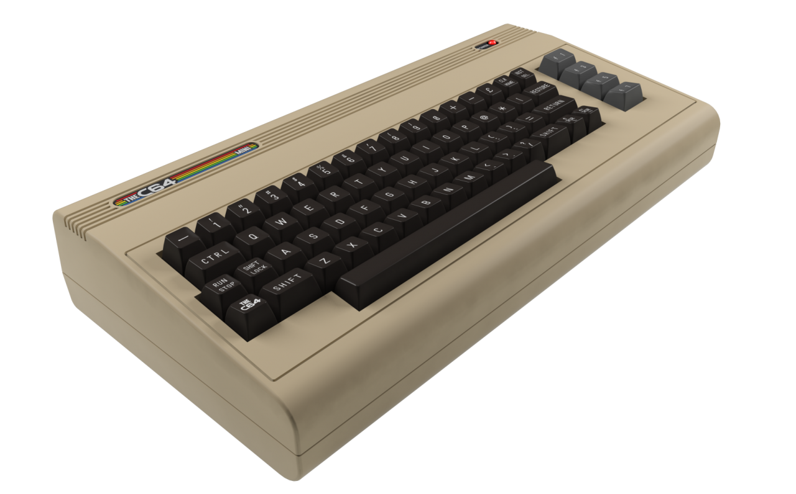
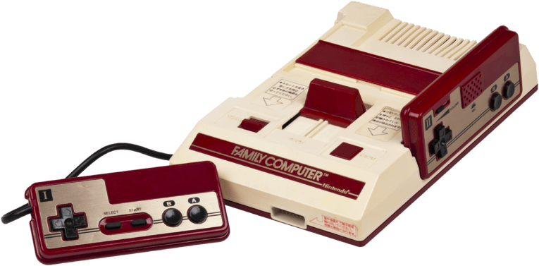

Au début des années 1980 démarre
la diffusion à grande échelle des ordinateurs personnels
auxquels est associée une communauté hobbyiste et vidéoludique.Les jeux vidéo s’adaptent à ce nouveau support (Apple II, ZX80,
Commodore 64, MSX, Amstrad CPC, etc.). Il s’agit alors surtout de jeux d’arcade au graphisme élémentaire dont le chargement,
à partir de cassettes audio, peut être très long.Des 1985, l’Amiga et l’Atari ST, techniquement plus évoluée,
renouvelleront le jeu vidéo sur ordinateur, notamment le celebre Atari Mega STE.
Toujours dans les années 1980, les jeux vidéo sont principalement joués sur des bornes d’arcade. Les consoles individuelles, qui ne sont pas
autant répandues, ne supportent qu’un nombre limité de jeux, souvent mal adaptés de ces bornes
Le chiffre d’affaires des sociétés de jeux vidéo atteint cinq milliards de dollars aux États-Unis en 1981.
En 1982, General Consumer Electronics publie la console Vectrex qui propose des graphismes vectoriels. Commodore commercialise l'ordinateur personnel
Commodore 64
et utilise
une stratégie de vente très agressive. Sinclair Research commercialise au Royaume-Uni lefameux ZX Spectrum qui devient le rival du Commodore 64 en Europe.
|
Le marché des jeux sur console, fragilisé par une dispersion des formats et une qualité faible, s’effondre à la fin de l’année 1983.
Concurrencé par les ordinateurs personnels, le krach du jeu vidéo
de 1983 commence.
Les jeux vidéo vont alors se développer principalement sur les ordinateurs personnels. Des icônes du jeu vidéo vont toutefois naître durant cette période. À partir du moment où le marché des consoles de jeu redémarrera avec des jeux spécifiquement développés pour
elles, grâce à Nintendo et Super Mario Bros.
Sur console, Space Invaders est la plus grosse vente de l'année sur Atari 2600. Nintendo met sur le marché un jeu électronique portable
avec un écran à cristaux liquides, la Game and Watch, ancêtre des consoles portables.
Pendant ce temps Infocom continue de produire des jeux d’aventure textuels de grande qualité, mais perd peu à peu son public. À la fin de la décennie,
LucasArts entre en jeu et prend la relève avec Maniac Mansion et Zak McKracken and the Alien Mindbenders, introduisant un nouveau mode
de jeu ou la souris prime sur le clavier.
La même année, Shigeru Miyamoto est chargé 
d’améliorer Radar
Scope, un jeu d’arcade de Nintendo.Au lieu de ça, Miyamoto décide de faire un autre jeu : Donkey Kong, qui est
instantanément un succès.
|
 En 1982, Coleco publie le ColecoVision,une console à base de cartouches. Nintendo lui confie la licence de Donkey Kong. Midway publie Ms. Pac-Man,Namco et Super Pac-Man
cette année.
En 1983, Nintendo, société japonaise qui s’est fait un nom dans les cartes à jouer et le domaine des jeux, sort la Family Computer (Famicom), console de
jeux vidéo
individuelle. Son démarrage est lent, mais les jeux proposés font augmenter la demande. La console, affichant 50 couleurs sur un écran de résolution 256 × 240, est de
technologie avancée à un prix peu élevé, modèle que gardera la société par la suite.
En 1985, sort la Sega Mark III (Master System),
elle ne dépassera jamais les 11 % de parts de marché. En effet, la Family Computer (Nintendo Entertainment System) est pratiquement seule à chaque lancement et bénéficie de
l’appui massif des éditeurs tiers. Les jeux vidéo sortent de la crise, grâce à une production et une innovation qui font augmenter la demande.
Les icônes Mario, Donkey Kong, Metroid, The Legend of Zelda, Dragon Quest tirent la
machine vers le haut.
En 1989, Nintendo sort la Game Boy, premier succès commercial pour une console portable.
en 1985, une distinction sera systématiquement effectuée entre jeux sur console et jeux sur ordinateur. 100 000 machines sont vendues aux États-Unis.
Le jeu vidéo se démocratise et les consoles de salon apparaissent dans les foyers. Les consoles sont maintenant des produits de plus en plus prisés par un public assez jeune.
En 1982, Coleco publie le ColecoVision,une console à base de cartouches. Nintendo lui confie la licence de Donkey Kong. Midway publie Ms. Pac-Man,Namco et Super Pac-Man
cette année.
En 1983, Nintendo, société japonaise qui s’est fait un nom dans les cartes à jouer et le domaine des jeux, sort la Family Computer (Famicom), console de
jeux vidéo
individuelle. Son démarrage est lent, mais les jeux proposés font augmenter la demande. La console, affichant 50 couleurs sur un écran de résolution 256 × 240, est de
technologie avancée à un prix peu élevé, modèle que gardera la société par la suite.
En 1985, sort la Sega Mark III (Master System),
elle ne dépassera jamais les 11 % de parts de marché. En effet, la Family Computer (Nintendo Entertainment System) est pratiquement seule à chaque lancement et bénéficie de
l’appui massif des éditeurs tiers. Les jeux vidéo sortent de la crise, grâce à une production et une innovation qui font augmenter la demande.
Les icônes Mario, Donkey Kong, Metroid, The Legend of Zelda, Dragon Quest tirent la
machine vers le haut.
En 1989, Nintendo sort la Game Boy, premier succès commercial pour une console portable.
en 1985, une distinction sera systématiquement effectuée entre jeux sur console et jeux sur ordinateur. 100 000 machines sont vendues aux États-Unis.
Le jeu vidéo se démocratise et les consoles de salon apparaissent dans les foyers. Les consoles sont maintenant des produits de plus en plus prisés par un public assez jeune.
|